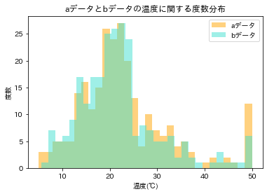
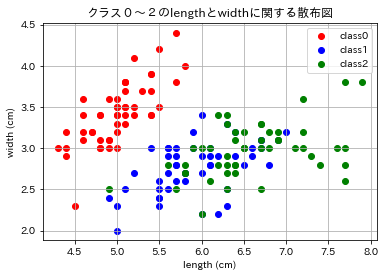
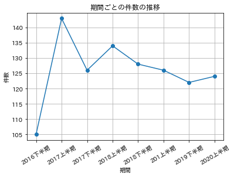
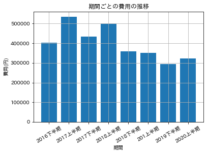

<!DOCTYPE html>


<html lang="en" >

  <head>
    <meta charset="utf-8" />
    <meta name="viewport" content="width=device-width, initial-scale=1.0" /><meta name="generator" content="Docutils 0.18.1: http://docutils.sourceforge.net/" />

    <title>【確認課題】Matplotlib &#8212; データコース教材</title>
  
  
  
  <script data-cfasync="false">
    document.documentElement.dataset.mode = localStorage.getItem("mode") || "";
    document.documentElement.dataset.theme = localStorage.getItem("theme") || "light";
  </script>
  
  <!-- Loaded before other Sphinx assets -->
  <link href="../_static/styles/theme.css?digest=12da95d707ffb74b382d" rel="stylesheet" />
<link href="../_static/styles/bootstrap.css?digest=12da95d707ffb74b382d" rel="stylesheet" />
<link href="../_static/styles/pydata-sphinx-theme.css?digest=12da95d707ffb74b382d" rel="stylesheet" />

  
  <link href="../_static/vendor/fontawesome/6.1.2/css/all.min.css?digest=12da95d707ffb74b382d" rel="stylesheet" />
  <link rel="preload" as="font" type="font/woff2" crossorigin href="../_static/vendor/fontawesome/6.1.2/webfonts/fa-solid-900.woff2" />
<link rel="preload" as="font" type="font/woff2" crossorigin href="../_static/vendor/fontawesome/6.1.2/webfonts/fa-brands-400.woff2" />
<link rel="preload" as="font" type="font/woff2" crossorigin href="../_static/vendor/fontawesome/6.1.2/webfonts/fa-regular-400.woff2" />

    <link rel="stylesheet" type="text/css" href="../_static/pygments.css" />
    <link rel="stylesheet" href="../_static/styles/sphinx-book-theme.css?digest=14f4ca6b54d191a8c7657f6c759bf11a5fb86285" type="text/css" />
    <link rel="stylesheet" type="text/css" href="../_static/togglebutton.css" />
    <link rel="stylesheet" type="text/css" href="../_static/copybutton.css" />
    <link rel="stylesheet" type="text/css" href="../_static/mystnb.4510f1fc1dee50b3e5859aac5469c37c29e427902b24a333a5f9fcb2f0b3ac41.css" />
    <link rel="stylesheet" type="text/css" href="../_static/sphinx-thebe.css" />
    <link rel="stylesheet" type="text/css" href="../_static/design-style.4045f2051d55cab465a707391d5b2007.min.css" />
  
  <!-- Pre-loaded scripts that we'll load fully later -->
  <link rel="preload" as="script" href="../_static/scripts/bootstrap.js?digest=12da95d707ffb74b382d" />
<link rel="preload" as="script" href="../_static/scripts/pydata-sphinx-theme.js?digest=12da95d707ffb74b382d" />

    <script data-url_root="../" id="documentation_options" src="../_static/documentation_options.js"></script>
    <script src="../_static/jquery.js"></script>
    <script src="../_static/underscore.js"></script>
    <script src="../_static/_sphinx_javascript_frameworks_compat.js"></script>
    <script src="../_static/doctools.js"></script>
    <script src="../_static/clipboard.min.js"></script>
    <script src="../_static/copybutton.js"></script>
    <script src="../_static/scripts/sphinx-book-theme.js?digest=5a5c038af52cf7bc1a1ec88eea08e6366ee68824"></script>
    <script>let toggleHintShow = 'Click to show';</script>
    <script>let toggleHintHide = 'Click to hide';</script>
    <script>let toggleOpenOnPrint = 'true';</script>
    <script src="../_static/togglebutton.js"></script>
    <script>var togglebuttonSelector = '.toggle, .admonition.dropdown';</script>
    <script src="../_static/design-tabs.js"></script>
    <script>const THEBE_JS_URL = "https://unpkg.com/thebe@0.8.2/lib/index.js"
const thebe_selector = ".thebe,.cell"
const thebe_selector_input = "pre"
const thebe_selector_output = ".output, .cell_output"
</script>
    <script async="async" src="../_static/sphinx-thebe.js"></script>
    <script>DOCUMENTATION_OPTIONS.pagename = 'exercise/matplotlib_quiz';</script>
    <link rel="index" title="Index" href="../genindex.html" />
    <link rel="search" title="Search" href="../search.html" />
    <link rel="next" title="機械学習に使われる数学" href="../ja-edited/03_Basic_Math_for_Machine_Learning.html" />
    <link rel="prev" title="Matplotlib 入門" href="../ja-edited/12_Introduction_to_Matplotlib.html" />
  <meta name="viewport" content="width=device-width, initial-scale=1"/>
  <meta name="docsearch:language" content="en"/>
  </head>
  
  
  <body data-bs-spy="scroll" data-bs-target=".bd-toc-nav" data-offset="180" data-bs-root-margin="0px 0px -60%" data-default-mode="">

  
  
  <a class="skip-link" href="#main-content">Skip to main content</a>
  
  <input type="checkbox"
          class="sidebar-toggle"
          name="__primary"
          id="__primary"/>
  <label class="overlay overlay-primary" for="__primary"></label>
  
  <input type="checkbox"
          class="sidebar-toggle"
          name="__secondary"
          id="__secondary"/>
  <label class="overlay overlay-secondary" for="__secondary"></label>
  
  <div class="search-button__wrapper">
    <div class="search-button__overlay"></div>
    <div class="search-button__search-container">
<form class="bd-search d-flex align-items-center"
      action="../search.html"
      method="get">
  <i class="fa-solid fa-magnifying-glass"></i>
  <input type="search"
         class="form-control"
         name="q"
         id="search-input"
         placeholder="Search this book..."
         aria-label="Search this book..."
         autocomplete="off"
         autocorrect="off"
         autocapitalize="off"
         spellcheck="false"/>
  <span class="search-button__kbd-shortcut"><kbd class="kbd-shortcut__modifier">Ctrl</kbd>+<kbd>K</kbd></span>
</form></div>
  </div>
  
    <nav class="bd-header navbar navbar-expand-lg bd-navbar">
    </nav>
  
  <div class="bd-container">
    <div class="bd-container__inner bd-page-width">
      
      <div class="bd-sidebar-primary bd-sidebar">
        

  
  <div class="sidebar-header-items sidebar-primary__section">
    
    
    
    
  </div>
  
    <div class="sidebar-primary-items__start sidebar-primary__section">
        <div class="sidebar-primary-item">
  

<a class="navbar-brand logo" href="../ja-edited/01_Welcome_to_Chainer_Tutorial.html">
  
  
  
  
  
    <p class="title logo__title">データコース教材</p>
  
</a></div>
        <div class="sidebar-primary-item"><nav class="bd-links" id="bd-docs-nav" aria-label="Main">
    <div class="bd-toc-item navbar-nav active">
        
        <ul class="nav bd-sidenav bd-sidenav__home-link">
            <li class="toctree-l1">
                <a class="reference internal" href="../ja-edited/01_Welcome_to_Chainer_Tutorial.html">
                    はじめに
                </a>
            </li>
        </ul>
        <ul class="current nav bd-sidenav">
<li class="toctree-l1"><a class="reference internal" href="../ja-edited/02_01_Basics_of_Python_variable.html">Python 入門</a></li>
<li class="toctree-l1"><a class="reference internal" href="02_01_Basics_of_Python_variable.html">【確認課題】Python 入門</a></li>
<li class="toctree-l1"><a class="reference internal" href="../ja-edited/02_02_Basics_of_Python_control.html">制御構文</a></li>
<li class="toctree-l1"><a class="reference internal" href="02_02_Basics_of_Python_control.html">【確認課題】制御構文</a></li>
<li class="toctree-l1"><a class="reference internal" href="../ja-edited/02_03_Basics_of_Python_function.html">関数</a></li>
<li class="toctree-l1"><a class="reference internal" href="02_03_Basics_of_Python_function.html">【確認課題】関数</a></li>
<li class="toctree-l1"><a class="reference internal" href="../ja-edited/08_Introduction_to_NumPy.html">NumPy 入門</a></li>
<li class="toctree-l1"><a class="reference internal" href="numpy_quiz.html">【確認課題】Numpy</a></li>
<li class="toctree-l1"><a class="reference internal" href="../ja-edited/11_Introduction_to_Pandas.html">Pandas 入門</a></li>
<li class="toctree-l1"><a class="reference internal" href="pandas_quiz.html">【確認課題】Pandas</a></li>
<li class="toctree-l1"><a class="reference internal" href="../ja-edited/12_Introduction_to_Matplotlib.html">Matplotlib 入門</a></li>
<li class="toctree-l1 current active"><a class="current reference internal" href="#">【確認課題】Matplotlib</a></li>
<li class="toctree-l1"><a class="reference internal" href="../ja-edited/03_Basic_Math_for_Machine_Learning.html">機械学習に使われる数学</a></li>
<li class="toctree-l1"><a class="reference internal" href="../ja-edited/09_Introduction_to_Scikit-learn.html">scikit-learn 入門</a></li>
</ul>

    </div>
</nav></div>
    </div>
  
  
  <div class="sidebar-primary-items__end sidebar-primary__section">
  </div>
  
  <div id="rtd-footer-container"></div>


      </div>
      
      <main id="main-content" class="bd-main">
        
        

<div class="sbt-scroll-pixel-helper"></div>

          <div class="bd-content">
            <div class="bd-article-container">
              
              <div class="bd-header-article">
<div class="header-article-items header-article__inner">
  
    <div class="header-article-items__start">
      
        <div class="header-article-item"><label class="sidebar-toggle primary-toggle btn btn-sm" for="__primary" title="Toggle primary sidebar" data-bs-placement="bottom" data-bs-toggle="tooltip">
  <span class="fa-solid fa-bars"></span>
</label></div>
      
    </div>
  
  
    <div class="header-article-items__end">
      
        <div class="header-article-item">

<div class="article-header-buttons">


<div class="dropdown dropdown-launch-buttons">
  <button class="btn dropdown-toggle" type="button" data-bs-toggle="dropdown" aria-expanded="false" aria-label="Launch interactive content">
    <i class="fas fa-rocket"></i>
  </button>
  <ul class="dropdown-menu">
      
      
      
      <li><a href="https://colab.research.google.com/github/shinonome-inc/PythonTutorialForDSCourse/blob/main/./exercise/matplotlib_quiz.ipynb" target="_blank"
   class="btn btn-sm dropdown-item"
   title="Launch onColab"
   data-bs-placement="left" data-bs-toggle="tooltip"
>
  

<span class="btn__icon-container">
  
    
  </span>
<span class="btn__text-container">Colab</span>
</a>
</li>
      
  </ul>
</div>


<div class="dropdown dropdown-download-buttons">
  <button class="btn dropdown-toggle" type="button" data-bs-toggle="dropdown" aria-expanded="false" aria-label="Download this page">
    <i class="fas fa-download"></i>
  </button>
  <ul class="dropdown-menu">
      
      
      
      <li><a href="../_sources/exercise/matplotlib_quiz.ipynb" target="_blank"
   class="btn btn-sm btn-download-source-button dropdown-item"
   title="Download source file"
   data-bs-placement="left" data-bs-toggle="tooltip"
>
  

<span class="btn__icon-container">
  <i class="fas fa-file"></i>
  </span>
<span class="btn__text-container">.ipynb</span>
</a>
</li>
      
      
      
      
      <li>
<button onclick="window.print()"
  class="btn btn-sm btn-download-pdf-button dropdown-item"
  title="Print to PDF"
  data-bs-placement="left" data-bs-toggle="tooltip"
>
  

<span class="btn__icon-container">
  <i class="fas fa-file-pdf"></i>
  </span>
<span class="btn__text-container">.pdf</span>
</button>
</li>
      
  </ul>
</div>


<button onclick="toggleFullScreen()"
  class="btn btn-sm btn-fullscreen-button"
  title="Fullscreen mode"
  data-bs-placement="bottom" data-bs-toggle="tooltip"
>
  

<span class="btn__icon-container">
  <i class="fas fa-expand"></i>
  </span>

</button>


<script>
document.write(`
  <button class="theme-switch-button btn btn-sm btn-outline-primary navbar-btn rounded-circle" title="light/dark" aria-label="light/dark" data-bs-placement="bottom" data-bs-toggle="tooltip">
    <span class="theme-switch" data-mode="light"><i class="fa-solid fa-sun"></i></span>
    <span class="theme-switch" data-mode="dark"><i class="fa-solid fa-moon"></i></span>
    <span class="theme-switch" data-mode="auto"><i class="fa-solid fa-circle-half-stroke"></i></span>
  </button>
`);
</script>

<script>
document.write(`
  <button class="btn btn-sm navbar-btn search-button search-button__button" title="Search" aria-label="Search" data-bs-placement="bottom" data-bs-toggle="tooltip">
    <i class="fa-solid fa-magnifying-glass"></i>
  </button>
`);
</script>
<label class="sidebar-toggle secondary-toggle btn btn-sm" for="__secondary"title="Toggle secondary sidebar" data-bs-placement="bottom" data-bs-toggle="tooltip">
    <span class="fa-solid fa-list"></span>
</label>
</div></div>
      
    </div>
  
</div>
</div>
              
              

<div id="jb-print-docs-body" class="onlyprint">
    <h1>【確認課題】Matplotlib</h1>
    <!-- Table of contents -->
    <div id="print-main-content">
        <div id="jb-print-toc">
            
            <div>
                <h2> Contents </h2>
            </div>
            <nav aria-label="Page">
                <ul class="visible nav section-nav flex-column">
<li class="toc-h2 nav-item toc-entry"><a class="reference internal nav-link" href="#id1">1問目</a></li>
<li class="toc-h2 nav-item toc-entry"><a class="reference internal nav-link" href="#id2">2問目</a></li>
<li class="toc-h2 nav-item toc-entry"><a class="reference internal nav-link" href="#id3">3問目</a></li>
</ul>
            </nav>
        </div>
    </div>
</div>

              
                
<div id="searchbox"></div>
                <article class="bd-article" role="main">
                  
  <section class="tex2jax_ignore mathjax_ignore" id="matplotlib">
<h1>【確認課題】Matplotlib<a class="headerlink" href="#matplotlib" title="Permalink to this heading">#</a></h1>
<div class="cell docutils container">
<div class="cell_input docutils container">
<div class="highlight-ipython3 notranslate"><div class="highlight"><pre><span></span><span class="c1">#使うライブラリ</span>
<span class="o">!</span>pip<span class="w"> </span>install<span class="w"> </span>japanize-matplotlib
<span class="kn">import</span> <span class="nn">matplotlib.pyplot</span> <span class="k">as</span> <span class="nn">plt</span>
<span class="kn">import</span> <span class="nn">pandas</span> <span class="k">as</span> <span class="nn">pd</span>
<span class="kn">import</span> <span class="nn">numpy</span> <span class="k">as</span> <span class="nn">np</span>
<span class="kn">import</span> <span class="nn">japanize_matplotlib</span>
<span class="n">japanize_matplotlib</span><span class="o">.</span><span class="n">japanize</span><span class="p">()</span>
</pre></div>
</div>
</div>
<div class="cell_output docutils container">
<div class="output stream highlight-myst-ansi notranslate"><div class="highlight"><pre><span></span>Collecting japanize-matplotlib
</pre></div>
</div>
<div class="output stream highlight-myst-ansi notranslate"><div class="highlight"><pre><span></span>  Downloading japanize-matplotlib-1.1.3.tar.gz (4.1 MB)
?25l     ━━━━━━━━━━━━━━━━━━━━━━━━━━━━━━━━━━━━━━━━ <span class=" -Color -Color-Green">0.0/4.1 MB</span> <span class=" -Color -Color-Red">?</span> eta <span class=" -Color -Color-Cyan">-:--:--</span>
     ━╺━━━━━━━━━━━━━━━━━━━━━━━━━━━━━━━━━━━━━━ <span class=" -Color -Color-Green">0.1/4.1 MB</span> <span class=" -Color -Color-Red">3.7 MB/s</span> eta <span class=" -Color -Color-Cyan">0:00:02</span>
</pre></div>
</div>
<div class="output stream highlight-myst-ansi notranslate"><div class="highlight"><pre><span></span>     ━━━━╺━━━━━━━━━━━━━━━━━━━━━━━━━━━━━━━━━━━ <span class=" -Color -Color-Green">0.5/4.1 MB</span> <span class=" -Color -Color-Red">6.8 MB/s</span> eta <span class=" -Color -Color-Cyan">0:00:01</span>
</pre></div>
</div>
<div class="output stream highlight-myst-ansi notranslate"><div class="highlight"><pre><span></span>     ━━━━━━━━╺━━━━━━━━━━━━━━━━━━━━━━━━━━━━━━━ <span class=" -Color -Color-Green">0.9/4.1 MB</span> <span class=" -Color -Color-Red">8.3 MB/s</span> eta <span class=" -Color -Color-Cyan">0:00:01</span>
     ━━━━━━━━━━━━╸━━━━━━━━━━━━━━━━━━━━━━━━━━━ <span class=" -Color -Color-Green">1.3/4.1 MB</span> <span class=" -Color -Color-Red">9.7 MB/s</span> eta <span class=" -Color -Color-Cyan">0:00:01</span>
</pre></div>
</div>
<div class="output stream highlight-myst-ansi notranslate"><div class="highlight"><pre><span></span>     ━━━━━━━━━━━━━━━━━━╸━━━━━━━━━━━━━━━━━━━━━ <span class=" -Color -Color-Green">1.9/4.1 MB</span> <span class=" -Color -Color-Red">11.1 MB/s</span> eta <span class=" -Color -Color-Cyan">0:00:01</span>
</pre></div>
</div>
<div class="output stream highlight-myst-ansi notranslate"><div class="highlight"><pre><span></span>     ━━━━━━━━━━━━━━━━━━━━━━━━━╺━━━━━━━━━━━━━━ <span class=" -Color -Color-Green">2.6/4.1 MB</span> <span class=" -Color -Color-Red">12.6 MB/s</span> eta <span class=" -Color -Color-Cyan">0:00:01</span>
     ━━━━━━━━━━━━━━━━━━━━━━━━━━━━━━━━━╸━━━━━━ <span class=" -Color -Color-Green">3.5/4.1 MB</span> <span class=" -Color -Color-Red">14.3 MB/s</span> eta <span class=" -Color -Color-Cyan">0:00:01</span>
</pre></div>
</div>
<div class="output stream highlight-myst-ansi notranslate"><div class="highlight"><pre><span></span>     ━━━━━━━━━━━━━━━━━━━━━━━━━━━━━━━━━━━━━━━━ <span class=" -Color -Color-Green">4.1/4.1 MB</span> <span class=" -Color -Color-Red">14.8 MB/s</span> eta <span class=" -Color -Color-Cyan">0:00:00</span>
?25h
</pre></div>
</div>
<div class="output stream highlight-myst-ansi notranslate"><div class="highlight"><pre><span></span>  Preparing metadata (setup.py) ... ?25l-
</pre></div>
</div>
<div class="output stream highlight-myst-ansi notranslate"><div class="highlight"><pre><span></span> done
?25hRequirement already satisfied: matplotlib in /opt/hostedtoolcache/Python/3.8.16/x64/lib/python3.8/site-packages (from japanize-matplotlib) (3.7.1)
Requirement already satisfied: importlib-resources&gt;=3.2.0 in /opt/hostedtoolcache/Python/3.8.16/x64/lib/python3.8/site-packages (from matplotlib-&gt;japanize-matplotlib) (5.12.0)
Requirement already satisfied: numpy&gt;=1.20 in /opt/hostedtoolcache/Python/3.8.16/x64/lib/python3.8/site-packages (from matplotlib-&gt;japanize-matplotlib) (1.24.2)
Requirement already satisfied: kiwisolver&gt;=1.0.1 in /opt/hostedtoolcache/Python/3.8.16/x64/lib/python3.8/site-packages (from matplotlib-&gt;japanize-matplotlib) (1.4.4)
Requirement already satisfied: fonttools&gt;=4.22.0 in /opt/hostedtoolcache/Python/3.8.16/x64/lib/python3.8/site-packages (from matplotlib-&gt;japanize-matplotlib) (4.39.2)
Requirement already satisfied: pyparsing&gt;=2.3.1 in /opt/hostedtoolcache/Python/3.8.16/x64/lib/python3.8/site-packages (from matplotlib-&gt;japanize-matplotlib) (3.0.9)
Requirement already satisfied: packaging&gt;=20.0 in /opt/hostedtoolcache/Python/3.8.16/x64/lib/python3.8/site-packages (from matplotlib-&gt;japanize-matplotlib) (23.0)
Requirement already satisfied: pillow&gt;=6.2.0 in /opt/hostedtoolcache/Python/3.8.16/x64/lib/python3.8/site-packages (from matplotlib-&gt;japanize-matplotlib) (9.4.0)
Requirement already satisfied: contourpy&gt;=1.0.1 in /opt/hostedtoolcache/Python/3.8.16/x64/lib/python3.8/site-packages (from matplotlib-&gt;japanize-matplotlib) (1.0.7)
Requirement already satisfied: python-dateutil&gt;=2.7 in /opt/hostedtoolcache/Python/3.8.16/x64/lib/python3.8/site-packages (from matplotlib-&gt;japanize-matplotlib) (2.8.2)
Requirement already satisfied: cycler&gt;=0.10 in /opt/hostedtoolcache/Python/3.8.16/x64/lib/python3.8/site-packages (from matplotlib-&gt;japanize-matplotlib) (0.11.0)
</pre></div>
</div>
<div class="output stream highlight-myst-ansi notranslate"><div class="highlight"><pre><span></span>Requirement already satisfied: zipp&gt;=3.1.0 in /opt/hostedtoolcache/Python/3.8.16/x64/lib/python3.8/site-packages (from importlib-resources&gt;=3.2.0-&gt;matplotlib-&gt;japanize-matplotlib) (3.15.0)
Requirement already satisfied: six&gt;=1.5 in /opt/hostedtoolcache/Python/3.8.16/x64/lib/python3.8/site-packages (from python-dateutil&gt;=2.7-&gt;matplotlib-&gt;japanize-matplotlib) (1.16.0)
</pre></div>
</div>
<div class="output stream highlight-myst-ansi notranslate"><div class="highlight"><pre><span></span>Building wheels for collected packages: japanize-matplotlib
</pre></div>
</div>
<div class="output stream highlight-myst-ansi notranslate"><div class="highlight"><pre><span></span>  Building wheel for japanize-matplotlib (setup.py) ... ?25l-
</pre></div>
</div>
<div class="output stream highlight-myst-ansi notranslate"><div class="highlight"><pre><span></span> \
</pre></div>
</div>
<div class="output stream highlight-myst-ansi notranslate"><div class="highlight"><pre><span></span> done
?25h  Created wheel for japanize-matplotlib: filename=japanize_matplotlib-1.1.3-py3-none-any.whl size=4120274 sha256=4f234e9cac15d40174930f7019bcbcdaf375fd23bfeafdbe542973d9bae02398
  Stored in directory: /home/runner/.cache/pip/wheels/4f/ca/96/4cc5e192421cceb077fbf4ffec533382edd416fd3fa0af0bbd
Successfully built japanize-matplotlib
</pre></div>
</div>
<div class="output stream highlight-myst-ansi notranslate"><div class="highlight"><pre><span></span>Installing collected packages: japanize-matplotlib
</pre></div>
</div>
<div class="output stream highlight-myst-ansi notranslate"><div class="highlight"><pre><span></span>Successfully installed japanize-matplotlib-1.1.3
</pre></div>
</div>
</div>
</div>
<section id="id1">
<h2>1問目<a class="headerlink" href="#id1" title="Permalink to this heading">#</a></h2>
<p>使うcsvはhist_data.csvです。下にコードを書いてください。</p>
<p></p>
</section>
<section id="id2">
<h2>2問目<a class="headerlink" href="#id2" title="Permalink to this heading">#</a></h2>
<p>使うcsvはscatter_data.csvです。下にコードを書いてください。</p>
<p></p>
</section>
<section id="id3">
<h2>3問目<a class="headerlink" href="#id3" title="Permalink to this heading">#</a></h2>
<p>使うcsvはline_data.csvです。下に2つの画像を表示するコードを書いてください。</p>
<p></p>
<p></p>
</section>
</section>

    <script type="text/x-thebe-config">
    {
        requestKernel: true,
        binderOptions: {
            repo: "binder-examples/jupyter-stacks-datascience",
            ref: "master",
        },
        codeMirrorConfig: {
            theme: "abcdef",
            mode: "python"
        },
        kernelOptions: {
            name: "python3",
            path: "./exercise"
        },
        predefinedOutput: true
    }
    </script>
    <script>kernelName = 'python3'</script>

                </article>
              

              
              
                <footer class="bd-footer-article">
                  <!-- Previous / next buttons -->
<div class="prev-next-area">
    <a class="left-prev"
       href="../ja-edited/12_Introduction_to_Matplotlib.html"
       title="previous page">
      <i class="fa-solid fa-angle-left"></i>
      <div class="prev-next-info">
        <p class="prev-next-subtitle">previous</p>
        <p class="prev-next-title">Matplotlib 入門</p>
      </div>
    </a>
    <a class="right-next"
       href="../ja-edited/03_Basic_Math_for_Machine_Learning.html"
       title="next page">
      <div class="prev-next-info">
        <p class="prev-next-subtitle">next</p>
        <p class="prev-next-title">機械学習に使われる数学</p>
      </div>
      <i class="fa-solid fa-angle-right"></i>
    </a>
</div>
                </footer>
              
            </div>
            
            
              
                <div class="bd-sidebar-secondary bd-toc"><div class="sidebar-secondary-items sidebar-secondary__inner">

  <div class="sidebar-secondary-item">
  <div class="page-toc tocsection onthispage">
    <i class="fa-solid fa-list"></i> Contents
  </div>
  <nav class="bd-toc-nav page-toc">
    <ul class="visible nav section-nav flex-column">
<li class="toc-h2 nav-item toc-entry"><a class="reference internal nav-link" href="#id1">1問目</a></li>
<li class="toc-h2 nav-item toc-entry"><a class="reference internal nav-link" href="#id2">2問目</a></li>
<li class="toc-h2 nav-item toc-entry"><a class="reference internal nav-link" href="#id3">3問目</a></li>
</ul>
  </nav></div>

</div></div>
              
            
          </div>
          <footer class="bd-footer-content">
            <div class="bd-footer-content__inner">
<div class="bd-footer-content__inner container">
  
  <div class="footer-item">
    
<p class="component-author">
By PlayGround
</p>

  </div>
  
  <div class="footer-item">
    
  <p class="copyright">
    
      © Copyright 2022.
      <br/>
    
  </p>

  </div>
  
  <div class="footer-item">
    
  </div>
  
  <div class="footer-item">
    
  </div>
  
</div></div>
          </footer>
        

      </main>
    </div>
  </div>
  
  <!-- Scripts loaded after <body> so the DOM is not blocked -->
  <script src="../_static/scripts/bootstrap.js?digest=12da95d707ffb74b382d"></script>
<script src="../_static/scripts/pydata-sphinx-theme.js?digest=12da95d707ffb74b382d"></script>

  <footer class="bd-footer">
  </footer>
  </body>
</html>